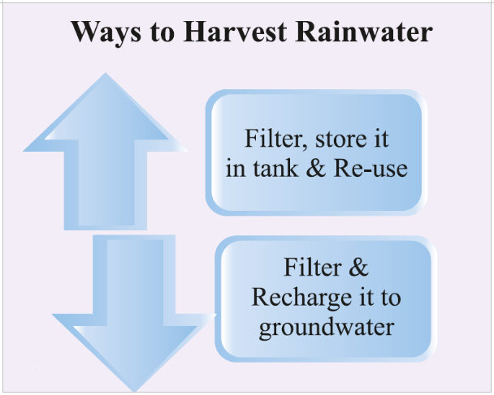

<section id="rainwater-harvesting-the-concept" class="rainwater-harvesting-the-concept">
  <div class="container">
    <div class="row">
        <div class="col-lg-12">
          <h3>The Concept</h3>
          <p>A technique in which rainwater falling on roofs and other surfaces is captured to be stored in a
            reservoir or recharged in the ground after providing it with suitable treatment.</p>
        </div><!-- Col end -->

        <div class="col-lg-6 mt-5 mt-lg-0">
            
          
        </div><!-- Col end -->

        <div class="col-lg-6 mt-5 mt-lg-0">
          
          <div class="page-slider small-bg ratio ratio-16x9">
            
              <video controls autoplay>
                <source src="/assets/video/VID-20220308-WA0010_jaldhara.mp4">
              </video>
          </div><!-- Page slider end-->          
        

        </div><!-- Col end -->
    </div><!-- Content row end -->

  </div><!-- Container end -->
</section><!-- Main container end -->